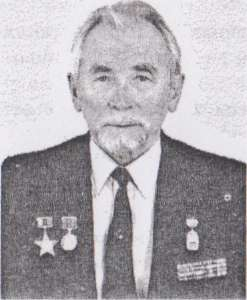

|
ОБ АВТОРЕ
ЛОПУХОВСКИЙ Лев Николаевич, 1930 г. р., окончил Воронежское суворовское (1948) и Ленинградское пехотное (1950) военные училища, Военную академию им. Фрунзе (1962). Работал помощником начальника оперативного отдела штаба ракетного корпуса. С 1967 г. - командир ракетного полка РВСН. В 1972 г. по состоянию здоровья перешел на преподавательскую работу.
После увольнения в запас в 1989 г. с должности старшего преподавателя кафедры общей тактики ВАФ три года руководил группой «Поиск» Московского ГВК. Затем работал в редакции Книги Памяти Москвы, редактировал 2 и 3 тома. Неоднократно выступал со статьями на военные темы. Был нештатным сотрудником Воениздата, занимался внутренним рецензированием рукописей книг по истории Великой Отечественной войны и мемуаров известных военачальников.
С 1993 по 2002 год работал военным консультантом фонда «Народная Память». Помимо обычной работы, связанной с розыском без вести пропавших военнослужащих, участвовал в подготовке к изданию книг по истории минувшей войны. Кандидат военных наук (1977), доцент (1980), профессор Академии военных наук РФ (2008), член Союза журналистов России и Ассоциации историков ВМВ, редактор 2-го и 3-го томов «Книги памяти» г. Москвы.
Министром обороны награжден почетным знаком «За активный поиск защитников Родины», павших в 1941-1945 гг. За активную работу по оказанию действенной социальной и духовной поддержки ветеранам и участникам Великой Отечественной войны от имени 4-х общественных организаций (в т.ч. Российского комитета ветеранов войны) - гражданским орденом Серебряная Звезда «Общественное признание». За активное участие в суворовском движении советом Московского содружества суворовцев, нахимовцев и кадет награжден кадетским крестом «За служение Отечеству»
Автор книг «Прохоровка, без грифа секретности» (2005) тиражом более 27 тыс. экземпляров, «Вяземская катастрофа 1941-го года» (2006), «Первые дни войны» (2007), «История 120-го ran БМ РГК и не только» (2008), «Июнь 1941. Запрограммированное поражение» (2010, в соавторстве).
К ВОПРОСУ О ДОСТОВЕРНОСТИ ОФИЦИАЛЬНЫХ ДАННЫХ О БЕЗВОЗВРАТНЫХ ПОТЕРЯХ В ВЕЛИКОЙ ОТЕЧЕСТВЕННОЙ ВОЙНЕ
Официальные данные о безвозвратных потерях Красной Армии в Великой Отечественной войне, опубликованные в труде «Россия и СССР в войнах XX века», по-прежнему подвергаются большому сомнению. Слишком велика разница между ними и данными независимых исследователей. В связи с этим проблема методики подсчёта потерь не потеряла актуальности и в наши дни, став объектом острой идеологической борьбы. Дело в том, что споры о масштабах людских потерь неразрывно связаны с мерой ответственности политического и военного руководства СССР того времени перед народом. В Советском Союзе в условиях жесткого идеологического контроля избегали говорить о неудачах и поражениях в минувшей войне. Если и упоминали о них, то общими словами. Цензура не разрешала публиковать в открытой печати конкретные сведения о потерях наших войск в боях и операциях. Замалчивание и прямое искажение действительных событий войны были обычным делом.
Первым о величине потерь СССР в Отечественной войне объявил 13 марта 1946 г. советским избирателям во время выборов в Верховный Совет И. Сталин, отвечая на вопросы корреспондента «Правды»: «В результате немецкого вторжения Советский Союз безвозвратно потерял в боях с немцами, а также благодаря немецкой оккупации и угону советских людей на немецкую каторгу около семи миллионов человек». Этим вождь наметил курс на занижение потерь, чтобы скрыть свои ошибки и просчеты накануне и в первую половину войны, поставившие страну на грань катастрофы. Диктатор мог назвать и меньшую цифру: все равно никто не посмел бы ему возразить.
Сразу после окончания войны статистики поставили вопрос о необходимости проведения новой (после 1939 г.) переписи населения СССР, чтобы оценить ущерб, причиненный войной. Война, кроме нанесения огромного материального ущерба, нарушила и учет населения страны. Для решения задач по восстановлению народного хозяйства и организации жизни населения в условиях мира требовалась адекватная демографическая информация. Предполагалось, в частности, это сделать это в 1949 году. Однако Сталин уклонился от проведения переписи. Он просто боялся проведения этой переписи, поскольку она вскрыла бы истинные масштабы потерь в войне. Показательно, что все воевавшие страны приступили к переписи своего населения, начиная с 1945 г. и закончили в 1951 г., А в СССР перепись прошла только в 1959 году (через 20 лет, вместо установленного промежутка в 10).
Хрущев, придя к власти, в пику Сталину, увеличил цифры потерь до «более 20 миллионов». В годы перестройки и гласности значительно усилились требования научной общественности, особенно ветеранов войны, к руководству страны внести ясность, какой же ценой была завоевана Победа, опубликовать, наконец, правдивые цифры людских потерь армии и флота в минувшей войне. Совсем игнорировать их было невозможно. Без подсчета потерь невозможно в полной мере оценить итоги войны и значение достигнутой Победы, узнать её цену.
Наконец, в апреле 1988 г. для подсчёта потерь в войне была создана комиссия под руководством заместителя начальника Генерального штаба генерал-полковника (ныне генерала армии, президента Академии военных наук РФ) М.А. Гареева, В ее состав включили представителей соответствующих штабов, управлений и учреждений Министерства обороны. К работе привлекли ученых-демографов из Академии наук СССР, Госкомстата СССР, Московского государственного университета и других заинтересованных научных учреждений страны. Уже в декабре этого же года Министром обороны СССР в ЦК КПСС была направлена докладная записка «О потерях личного состава Советских Вооруженных Сил в Великой Отечественной войне 1941-1945 гг.» с предложением о рассекречивании выявленных данных и целесообразности их публикации в открытой печати. Вне всякого сомнения, тогда же, кроме основных итоговых цифр, доложили и прикидки по соотношению людских потерь СССР и Германии. Однако окончательного решения из ЦК КПСС тогда получено не было.
В полном составе с привлечением представителей заинтересованных ведомств созданная комиссия собиралась два раза. На первом, организационном заседании были поставлены задачи ведомствам и институтам, на втором секретарь комиссии уже доложил результаты ее работы. По свидетельству некоторых участников заседаний, перед изумленными членами комиссии были вывешены таблицы с уже готовыми итоговыми данными. Такую работу было невозможно выполнить в столь короткий срок - чуть более полугода. В основу представленных расчетов положили результаты работы группы сотрудников Генерального штаба под руководством генерал-полковника С.М. Штеменко (1966-1968 гг.).
Президент СССР М.С. Горбачев в своем докладе на торжественном заседании Верховного Совета СССР 8 мая 1990 г., посвященном празднованию 45-летия Победы советского народа в Великой Отечественной войне, объявил: «Война унесла почти 27 миллионов жизней советских людей» (1).
Некоторые публицисты и демографы спорят, заявляя о потерянных страной в ходе войны 30 и даже 40 млн. человек. При этом они считают и погибших, и умерших естественной смертью людей, а даже неродившихся из-за войны детей. Мы не собираемся опровергать их недостаточно обоснованные расчеты. В первую очередь нас интересуют потери с военно-оперативной точки зрения, как показатель, в частности, уровня компетентности советского военного командования и подготовки штабов и войск.
На следующий день, 9 мая Министром обороны СССР были озвучены цифры безвозвратных потерь Красной Армии, ВМФ, пограничных и внутренних войск НКВД с военно-оперативной точки зрения - 11 444 100 военнослужащих (2). Были определены и так называемые демографические потери военнослужащих Вооруженных Сил - 8 700 тыс. человек (3)..
Впервые детальные статистические данные о потерях военнослужащих в ходе минувшей войны были опубликованы в 1993 году в труде «Гриф секретности снят» (4). В последующем этот труд был доработан, значительно расширен и опубликован под названием «Россия и СССР в войнах XX века» (5). Авторский коллектива обоих исследований, возглавляемый Г.Ф. Кривошеевым, использовал данные группы С.М. Штеменко, оргучетного управления Генштаба, Главного управления кадров НКО, а также другие архивные документы, основанные на донесениях войсковых частей. При этом по мере детализации расчетов в обоих трудах цифры численности войск к началу некоторых операций и убыли в людях менялись. Но, к удивлению читателей, итоговые данные по кварталам, годам, периодам и кампаниям войны неизменно выходили на уже озвученные максимальные числа, отражающие, по мнению членов высокой комиссии, фактическую убыль личного состава в ходе войны.
По этому поводу профессор Академии военных наук РФ генерал- полковник Г.Ф. Кривошеев на одном из заседаний Ассоциации историков Второй мировой войны заявил: «Нас критикуют и справа и слева, но мы спокойны, ибо опираемся на документы Генштаба». Он еще раз подтвердил, что основным официальным источником при определении убыли в людях являются донесения о потерях, получаемые от фронтовых, армейских объединений, соединений, отдельных частей, которые ежемесячно анализировались в Генеральном штабе, уточнялись и дополнялись материалами о неучтенных потерях и докладывались в Ставку Верховного Главного командования. Интересно, что в частном порядке некоторые авторы труда «Гриф секретности снят» признают, что они не могут отвечать за цифры, которые кто-то когда-то написал в донесениях. А почему бы не рассекретить эти донесения и другие соответствующие документы Генштаба, чтобы оценить их достоверность и снять всякие сомнения на этот счет?
Согласно «Табелю донесений по учету списочной численности и боевого состава Красной Армии» сведения о составе войск, их численности и потерях из дивизий, армий и фронтов в Генеральный штаб представлялись 3 раза в месяц (за каждые 10 дней). Но в условиях высокоманевренных боевых действий, особенно при неудачном развитии обстановки, потере управления и связи (из-за неоднократного переподчинения частей и соединений, окружения или неорганизованного отхода и т.п.) система регулярной отчетности не срабатывала. Тем более не представлялись донесения о результатах боевых действий и потерях соединений, попавших в окружение. Что могли доложить из соединений в условиях неорганизованного отхода, окружения, гибели штабов и целых частей, уничтожения учетных документов? Исследователи отдельных стратегических и фронтовых операций, особенно те из них, кто непосредственно работает с первичными архивными документами, то и дело обнаруживают, что реальные данные о численности и потерях советских войск значительно отличаются от официальных. И отличаются, как правило, в большую сторону. Это в первую очередь относится к операциям, в которых наши войска потерпели неудачу или поражение.
Соединения, прорвавшиеся из окружения или совершившие вынужденный отход в сложных условиях обстановки, в большинстве случаев наскоро пополнялись или формировались заново за счет маршевого пополнения и остатков расформированных частей и соединений. Анализ архивных документов их фондов показывает, что в донесениях о потерях сплошь и рядом не учитывалось пополнение. Людей в частях и подразделениях просто не успевали записывать поименно, не говоря уже об адресах их родных. Это неоднократно отмечалось и в приказах по учету личного состава. Характерный пример: 154-я сд Брянского фронта за период с 1 по 21 октября 1941 г. по донесениям потеряла 5 тыс. чел, из них безвозвратно - 2,5 тыс. Тщательная выверка данных по обнаруженным документам показала, что эта дивизия с учетом неоднократного пополнения потеряла за этот период 15 тыс. человек, из них безвозвратно - 9,4 тыс.
Вот и присылали «наверх» филькины грамоты, вроде «Донесения о потерях личного состава частями Западного фронта за октябрь месяц 1941 г.». Согласно этому донесению, потери войск фронта составили 66 392 человека, в том числе безвозвратно - 32 650 (из них без вести - 26 750, попало в плен - 80) (6). Хотя только потери 17 стрелковых и двух мотострелковых дивизий фронта, попавших в окружение под Вязьмой составили по оценке старшего научного сотрудника ЦАМО РФ В.Т. Елисеева более 130 тыс. человек (7).
Все это позволяет сделать вывод, что подсчёт потерь по донесениям хронически недоучитывает реальные потери, войск.
Расчетный же метод исчисления потерь в чрезвычайных обстоятельствах с учетом неоднократного пополнения в войсках почти не применялся. Это не было предусмотрено «Наставлением по учету и отчетности в Красной Армии», введенным в действие приказом НКО № 450 от 9 декабря 1940 г. Персональный учет потерь в соответствии с требованиями этого наставления фактически был рассчитан на действия войск в относительно стабильной боевой обстановке, в которой штабы будут иметь возможность последовательно, в установленные сроки представлять доклады в вышестоящие инстанции (8).
Еще одним источником данных о потерях являются книги военкоматов по учету извещений, поступивших из войск или Управления по персональному учету потерь НКО о погибших, умерших и пропавших без вести военнослужащих. В них зарегистрировано 12 400,9 тыс. извещений. Указанная цифра добавляла к общим потерям, учтенным в оперативном порядке (11.444,1 тыс. чел.) еще 956,8 тыс. человек. Но в этих книгах происходило нередко дублирование учета извещений на погибших (пропавших без вести), когда на одного и того же человека посылалось в разные военкоматы, (по запросам родственников, в связи с их эвакуацией, переездом) два или более извещения с соответствующей регистрацией. Кроме того, в книгах учета военкоматов были зарегистрированы в числе других и извещения, поступившие из Управления по персональному учету потерь в ответ на запросы родных и близких о тех, кто находился в народном ополчении, в партизанских отрядах, истребительных батальонах городов и районов, в спецформированиях других ведомств. Поскольку от этих формирований донесения об их численности и потерях в Генеральный штаб не представлялась, они не были включены в потери военнослужащих.
Между тем, все данные военкоматов о безвозвратных потерях были сосредоточены в соответствующих картотеках ЦАМО, где велась работа по исключению из них военнослужащих, оказавшихся в живых (учтенные ранее как пропавшие без вести) и дублирующих сведений. База картотек безвозвратных потерь была значительно шире, нежели книги учета военкоматов. Они составлялись не только на основе донесений войсковых частей, извещений военкоматов и запросов родственников в связи с потерей связи с фронтовиками. Немалая часть имен была установлена работниками военкоматов во время подворового опроса, проведенного в 1948-1949 годах, которые буквально обходили дворы, дома и собирали сведения о навернувшихся с войны. Насколько они это делали добросовестно (учитывая слабую укомплектованность военкоматов транспортом и недостаток средств), сейчас трудно сказать. Засекреченные отчеты, скорее всего, хранятся в архиве соответствующего управления Генштаба. Собранные сведения сверялись с имеющимися данными, по ним принимались надлежащие решения. После обработки они включались в соответствующие картотеки. Трудно представить, что люди в обстановке всеобщего доносительства и под бдительным оком компетентных органов могли сообщать ложные сведения о своих близких. Они отвечали просто - «Забрали в армию тогда-то, с войны не вернулся». А опрашивали только тех, кто выжил... Много карточек было заведено на основе изучения данных двух картотек WAST (справочной службы вермахта) - на военнопленных-офицеров и на военнопленных-солдат, переданных в архив американцами вскоре после войны. Собранные в картотеках данные дали основной прирост числа военнослужащих, пропавших без вести.
На начало 90-х годов в картотеках ЦАМО хранилось 17,2 млн. персональных карточек солдат (сержантов) и офицеров Красной Армии, погибших и пропавших без вести в минувшую войну (и это без учета потерь ВМФ, пограничных и внутренних войск НКВД). Указанное число на 5,8 млн. человек превышало число общих потерь, исчисленное группой Штеменко. Руководитель авторского коллектива Г.Ф. Кривошеее заручился справкой начальника ЦАМО о том, что картотеки еще не обработаны на предмет удаления дублирующих сведений и поэтому не могут являться достоверным источником при создании труда о потерях. Принятое решение не учитывать данные учета персональных потерь ТОГДА было вполне правомерным.
Но с тех пор работниками ЦАМО была проведена большая работа по упорядочению учета безвозвратных потерь и устранению из картотек дублирующих сведений. Из них были исключены также следующие категории выбывших из строя военнослужащих: дезертиры, осужденные и направленные в места заключения, а также снятые с учета советские военнослужащие, оказавшиеся живыми, в том числе вернувшиеся из плена после войны (по данным органов репатриации). В результате побуквенного обсчета в картотеках безвозвратных потерь рядового и сержантского состава Вооруженных Сил по неофициальным данным (результаты работы сотрудников ЦАМО не афишируются) по состоянию на март 2008 года оставалось 13 271 269 персональных карточек. По видам потерь они распределялись следующим образом (в скобках - в процентах к общему числу):
- убито - 4 173 709 (31,4%);
- умерло от ран и болезней - 1 383 052 (10,42%);
- погибло в плену - 495 558 (3,73%);
- пропало без вести - 7 156 262 (53,92%), в том числе по данным командиров войсковых частей - 1 720 951, по данным военкоматов - 5 435 311;
- приговорены к высшей мере наказания (расстрелу) - 62 688 (0,47%).
Попутно заметим, что за годы войны по приговорам военных трибуналов было расстреляно 135 тыс. человек, что составляет 13,6% от общего числа осужденных военнослужащих (994,3 тыс.) (9). Для сравнения: по свидетельству известного германского историка, профессора Агnо Lustiger, в вермахте во время войны трибуналами и судьями было вынесено около 30.000 смертных приговоров, из которых около 16.000 было приведено в исполнение (10). Сколько же было расстреляно заградотрядами при попытках остановить паническое бегство непосредственно на поле боя, когда по условиям боевой обстановки невозможно было довести дело до суда, мы никогда уже не узнаем. Кстати, это свидетельство неполноты данных картотек.
По данным же авторов статистического исследования (далее для краткости мы будем ссылаться на коллектив уважаемого Г.Ф. Кривошеева или на самого руководителя) безвозвратные потери составили: сержантов - 1 988 171, рядовых - 8 396 698, всего - 10 384 869, то есть на 2 886 400 человек (на 27,8%) меньше, чем по данным картотеки.
По результатам побуквенного обсчета персональных карточек потери офицеров по состоянию на конец 2000 г. составляли примерно 1,1 млн. человек (11). К концу 2007 года из этой картотеки по различным причинам были исключены 125 232 офицера и в ней осталось около 970 тыс. человек. Обсчет все эти годы продолжался (а, может быть, он уже закончился?), и число погибших и пропавших без вести офицеров, вероятно, уже вплотную приблизилось к цифрам потерь за Великую Отечественную войну, указанным в труде «Россия и СССР в войнах XX века» - 900 188 человек (12). Конечно, поименный учет потерь офицеров был поставлен намного лучше, нежели рядового и сержантского состава. Но это свидетельствует о достаточной степени достоверности данных картотек.
Таким образом, общие безвозвратные потери военнослужащих Красной Армии и Военно-морского флота по данным обеих картотек составляют 14 241 тыс. человек - почти на 3 млн (2 956 тыс.) больше, чем по официальным данным. Эти цифры вполне согласуются с данными известного исследователя деятельности ГКО Ю.А. Горькова: «За годы войны убыло из вооруженных сил 26,6 млн. человек, <...> и более половины из них составили безвозвратные потери» (13).
И совсем игнорировать такую большую разницу сейчас НЕДОПУСТИМО.
Чтобы поставить под сомнение данные картотек безвозвратных потерь ЦАМО, часто приводится следующий довод: в большинстве донесений военкоматов и Управления по персональному учету потерь НКО (составленных на основе запросов родных) нет данных о прохождении службы призванными лицами. Поэтому в них могут содержаться сведения о лицах, которые вообще не имеют отношения к армии. Мол, они могли ПОСЛЕ ПРИЗЫВА попасть куда угодно (в ополчение, в истребительные отряды и батальоны, в ВМФ, в формирования НКВД различного рода, на предприятия промышленности и т.д.). Поэтому их не следует учитывать при подсчете потерь Красной Армии. Но речь идет о разнице почти в 3 млн. человек. Известно, что на укомплектование войск и органов НКВД, соединений и частей дружественных армий, для работы в промышленности и в военные формирования других ведомств передано 5039,6 тыс. чел. (14). Неужели 3 млн. из них погибли или пропали без вести? Где, когда, в какой обстановке в промышленности могли быть такие потери военнообязанных? Где они зафиксированы, известны ли их фамилии? А ведь из промышленности и формирований НКВД периодически изымали военнообязанных путем разбронирования.
Как можно не учитывать тех, кого призвали, и которые не вернулись с войны? Почему 500 тыс. человек, призванных, но не попавших в свои части, не учтены, как потери военнослужащих? Ведь их служба „ началась с момента призыва и отправки их в части? Разве виноваты все эти люди, которых не хотят признать защитниками Родины, в том, что персональный учет личного состава в частях и соединениях не был налажен, как следует?
А дело в том, что признание данных картотек ЦАМО поставит под сомнение (слишком велика разница!) как цифры безвозвратных военно- оперативных потерь Вооруженных сил (11 444,1 тыс.), так и демографические потери военнослужащих (8 668,4 тыс.) (15). Придется пересматривать все расчеты авторов труда «Россия и СССР в войнах XX века», причем в большую сторону. А делать это соответствующие ведомства по известным причинам не хотят - придется пересматривать общее соотношение по безвозвратным потерям противоборствующих сторон. Именно поэтому картотеки безвозвратных потерь ЦАМО, как бельмо в глазу определенных лиц. Отсюда и недавние публичные заявления некоторых больших начальников о том, что они сами до сих пор числятся в картотеках погибшими или пропавшими без вести. Подобными заявлениями пытаются подорвать доверие к данным картотек. Недаром еще в 1995 году, когда истек 50-летний срок их хранения, поступали предложения по их уничтожению. Нельзя исключить, что эти попытки могут быть реализованы сейчас, например, при реорганизации архивов, передаче дел из одного учреждения в другое под предлогом истечения установленных сроков их хранения.
Нежелание соответствующих инстанций учитывать данные картотек безвозвратных потерь ЦАМО наводит на мысль о наличии некоего политического заказа - не допустить резкого дисбаланса в соотношении безвозвратных потерь противоборствующих сторон в Великой Отечественной войне, свести его к минимуму. Он мог быть высказан негласно в годы холодной войны, когда отделы и комиссия Генштаба только начинали готовить данные о потерях. В условиях ожесточенной идеологической борьбы давать лишние козыри «западным фальсификаторам» истории Второй мировой войны было неразумно. Политический заказ, отказаться от которого в тогдашних условиях было невозможно, особенно хорошо просматривается на примерах неудачных для Красной Армии операций. Поэтому в перечне фронтовых операций упомянутых трудов не найдешь ни слова о потерях в вяземской и орловско-брянской операциях 1941 года.
Опущена и стратегическая наступательная операция «Марс» (с 25 ноября по 20 декабря 1942 года). Сейчас некоторые историки предлагают считать, что эту операцию проводили в демонстративных целях. Ничего подобного: в не так давно рассекреченном Перечне Генерального штаба Вооруженных Сил СССР, составленном после войны, она числится в ряду основных наступательных стратегических операций. Ничего себе «демонстрация», которая закончилась окружением крупных группировок наших войск! Причем только безвозвратные людские потери в этой операции составили 70,4 тыс. человек, или 14 процентов от численности войск к началу операции (16). Столько потеряли безвозвратно три фронта в курской оборонительной операции по официальным данным (70,3 тыс.) (17).
Иногда, чтобы уменьшить огромную диспропорцию в соотношении потерь сторон в отдельных операциях, авторский коллектив Г.Ф. Кривошеева не гнушается манипуляций цифрами. Мне уже приходилось писать об этом. В 2005 г. я подарил генерал-полковнику в отставке свою книгу о Прохоровском сражении, предупредив, что не согласен с его оценкой потерь Воронежского и Степного фронтов в курской оборонительной операции (18). «Навесив» часть потерь Воронежского фронта на Степной, авторы уровняли их безвозвратные потери - 27 542 и 27 452 человек (общие потери: соответственно - 73 892 и 70 058) (19), На самом деле войска И.С. Конева, вступившие в сражение не с 9-го июля (по Г.Ф. Кривошееву), а в ночь на 19-е (когда Манштейн начал отводить свои войска в исходное положение) в период с 20 по 31 июля потеряли в два раза меньше - 34 449 солдат и офицеров (20).
По существу, в книге я предъявил авторам статистического исследования обвинение в подлоге. Сотрудник Г.Ф. Кривошеева записал мои координаты, пообещав ответить на критику Ответа нет до сих пор. Да и что они могут ответить: в своих выводах я опирался на те же архивные документы, что и Кривошеее. Кстати, в частных разговорах офицеры Генштаба говорили мне, что я зря нападаю на их шефов: они по должности вынуждены поддерживать официальную линию в вопросе о потерях в Великой Отечественной войне. Признаться сейчас в сокрытии правды тем, кто готовил, озвучивал и защищает официальные цифры потерь - смерти подобно (политической, конечно). Им можно только посочувствовать.
Значительную часть безвозвратных потерь составили военнослужащие, пропавшие без вести и попавшие в плен: - почти 40% по официальным данным (с учетом неучтенных потерь первых месяцев войны) и более 57%, учтенных в картотеках безвозвратных потерь ЦАМО. Разница в несколько миллионов человек, по сравнению с официальными данными, как раз и набегает, в основном, за счет этого вида потерь. Авторы труда о потерях сетуют, что им не удалось найти немецкие документы, содержащие полные сведения о числе советских военнопленных, захваченных до начала 1942 г. Объяснили они это тем, что в 1941 г. представление донесений о числе взятых в плен советских военнослужащих не являлось обязательным. Распоряжение войскам по этому вопросу было отдано ОКХ только в январе 1942 г.
Видно, плохо искали. Обратимся к немецким данным за самый тяжелый для нас 1941 год (по существу, полгода боевых действий). Выступая в рейхстаге 11 декабря 1941 года, Гитлер сообщил, что за пять месяцев войны, с 22 июня по 1 декабря, захвачено и уничтожено 17 332 советских боевых самолета, 21 391 танк, 32 541 орудие. Советский агитпроп, естественно, объявил эти цифры выдумками Геббельса и бредом бесноватого фюрера. Этой линии придерживались и после войны - более 50 лег. В настоящее время официально признано, что Красная Армия в 1941 году потеряла 20,5 тыс. танков (из них 3,2 тыс. KB, Т-28 и Т-34), 17,9 тыс. боевых самолетов, 101,1 тыс. орудий и минометов (без учета 50-мм минометов - 63,1 тыс.) (21). Эти цифры ненамного отличаются от тех, что объявил Гитлер (22). Попутно заметим, что к декабрю 1941 года в действующей армии оставались всего 1958 танков, из них легких (Т-26, Б'Г, Т-40 и Т-60) - 1393 (23). С октября но декабрь в Советский Союз прибыл 361 английский танк (24).
Одновременно фюрер заявил, что к 1 декабря было взято в плен 3 806 865 советских солдат и офицеров. Еще большее число - 3,9 млн. - было названо 19 февраля 1942 г. в заявлении правительственного чиновника Мансфельда в Экономической палате Рейха (25). Оно базировалось на докладах немецких войск, согласно которым с начала войны по 31.12.1941 в плен было взято 3 906 765 человек (в т.ч. офицеров - 15 179)'. Однако после последующего уточнения их количество оказалось меньшим на 551 266 чел. - 3 355 499 (в т.ч. офицеров - 5 184) (27). Видимо, это произошло за счет исключения из числа военнопленных гражданских лиц, которых с самого начала привлекали к работе в промышленности и сельском хозяйстве без всяких ограничений.
По другим (помесячным) данным, число пленных, захваченных в 1941 г. составило 3 367 206, из них только в октябре взято в плен 1 037 778 чел. (28). В официальной немецкой истории Второй мировой войны: записано:
«Из 3350 000 советских военнопленных, захваченных в плен в 1941 г., к 1 февраля 1942 г. погибли почти 60% (то есть 2010 тыс.), включая свыше 600 тыс., начиная с декабря 1941 г. Их смертность была особенно высока на территории Рейха (18,5% в декабре 1941 г.). К началу апреля 1942 г. около 47% советских военнопленных умерли там от голода и тифа. Эти факты убедительно доказывают, что советские военнопленные массами погибали не из-за каких-то неизбежных «чрезвычайных обстоятельств», а стали жертвами целенаправленной бесчеловечной политики нацистов» (29).
Эти цифры перекликаются с данными известного немецкого историка, профессора Гейдельбергского университета Кристиана Штрайта: из 3350 639 советских военнопленных к 1 февраля 1942 г. в живых осталось только 1 020 531 человек, а еще 280 108 были отпущены. Остальные 2,05 млн. стали жертвами расстрелов, эпидемий, голода и холода (30). Отметим, что основная масса советских военнопленных погибла от голода, болезней и лишений в 1941 - начале 1942 г. После провала «блицкрига», когда война перешла в фазу борьбы на истощение, пленные понадобились немцам в качестве дешевой рабочей силы. И отношение к ним соответственно изменилось: их перестали сознательно обрекать на вымирание. О числе тех, кто погиб при транспортировке военнопленных из районов боевых действий, мы уже никогда не узнаем.
К. Штрайт также приводит данные об общем количестве советских военнопленных, захваченных немцами. По данным управления по делам военнопленных ОКВ на 1 мая 1944 г. в немецком плену их насчитывалось 5 163 381 человек, в декабре 1944 г. - 5,6 млн.; по данным ОКХ от 20 февраля 1945 г. - 5 734 528 на 31 января 1945 (31).
По донесениям войск и сведениям наших органов репатриации за всю войну пропало без вести и попало в плен противнику 3 396,4 тыс. чел. Но это число примерно равно количеству пленных, захваченных немцами только в одном 1941 году. Оставить без внимания такую явную несуразность было невозможно. И авторы груда «Россия и СССР в войнах XX века» к указанному числу прибавили неучтенные потери первых месяцев войны - 1 162,6 тыс. (32) (как будто в последующие годы наши войска не попадали больше в положение, когда штабам было не до учета потерь). В результате они получили 4 559 тыс. военнослужащих, попавших в плен и пропавших без вести (33).
Учитывая значительный разброс цифр, примем за точку отсчета данные немецкого архива, согласно которым, с начала войны по 10.04.1945 г. немцы взяли в плен 5 487 549 чел. (34). Но к этому числу необходимо прибавить военнослужащих, взятых в плен союзниками Германии.
В составе группы армий «Юг» на советско-германском фронте действовали две румынские армии, За два месяца боев за Одессу 4-я армия взяла в плен около 16 тыс. красноармейцев. Части 3-й армии к лету 1942 г. захватили не менее 87 тыс. советских военнослужащих. Но там, где румынские войска находились под немецким командованием, они передавали пленных немецким союзникам (35). Имеются некоторые сведения о том, что румынские войска в самом начале войны освобождали уроженцев Бессарабии и Северной Буковины из числа захваченных в плен советских военнослужащих. Однако определенных данных на этот счет, тем более о количестве освобожденных из плена, обнаружить не удалось.
Из числа официально зарегистрированных румынскими военными властями 82 090 военнопленных в 1943 г. было освобождено 13 682 уроженца Трансистрии (территории, аннексированной Румынией), В румынских лагерях военнопленных погиб 5221 военнопленный, бежало - 3331. Так что к моменту выхода Румынии из войны (23 августа 1944 г.) в лагерях оставалось 59 856 военнопленных (36). Финляндия захватила 64 188 пленных, из которых умерли 19 276 (30%) (37).
Так что при определении наших военно-оперативных потерь к общему числу советских военнослужащих, взятых в плен немцами, надо приплюсовать не менее 146 тыс. пленных, захваченных союзниками Германии (венгерские и итальянские войска, так же как и румынские дивизии, остававшиеся под германским командованием, взятых ими пленных передавали немцам).
Таким образом, общее количество советских военнопленных, захваченных немцами и их союзниками, составит не менее 5,6 млн. человек, что, во всяком случае, на один млн. больше числа, подсчитанного авторами статистического исследования.
Авторы труда «Россия и СССР в войнах XX века» категорически не согласны с немецкими данными. По их мнению, немцами учитывались, кроме военнослужащих, также гражданские лица, захваченные в районе боевых действий, личный состав спецформирований различных гражданских ведомств (путей сообщения, морского и речного флотов, оборонительного строительства, гражданской авиации, связи, здравоохранения и др.). Донесения о них в армейские (флотские) штабы и в Генеральный штаб не представлялись. Поэтому публикуемые в зарубежной печати сведения о числе военнопленных не могут быть приняты за основу для определения реального числа советских военнослужащих, оказавшихся в немецком плену. Донесения в наш Генштаб не представлялись, но причем здесь немецкие данные? Их достоверность надо проверять, сопоставляя сведения из различных источников, и на этой основе пытаться определить хотя бы приблизительно более реальное число советских военнослужащих, попавших в немецкий плен.
Да, немцы при подсчете захваченных военнопленных не обращали внимания, по какому ведомству они проходят. Например, среди них было много военных строителей. Так, на 19 сентября на строительстве в полосе Западного фронта было задействовано 9 отдельных строительных батальонов, Резервного и Брянского фронтов - 129 (в полосе Резервного фронта в отдельных строительных батальонах, строивших укрепления ржевско-вяземского рубежа, числилось 85 336 человек). Они понесли большие потери. Из 25 тыс. человек постоянного состава строительств из Вяземского котла на новые рубежи перешла лишь тысяча строителей. А всего из 100 тыс. строителей Западного управления оборонительных работ на новые рубежи перешли 42 тысячи (38). Если в середине сентября полевые строительства Главного управления оборонительных работ имели в своем составе 1 млн. 200 тыс. человек, то к 10 октября их осталось 700 тысяч. Потери военных строителей убитыми, ранеными, пропавшими без вести, оказавшимися в плену составили 500 тыс. человек (39). Сколько среди них было военнослужащих, которые состояли на довольствии в НКВД и Наркомате обороны? А ведь в октябре-декабре 1941 г. были сформированы шесть саперных армий, в состав которых входили 33 саперные бригады (40). Они относились к действующей армии, работали в тылу фронтов и нередко оказывались непосредственно вовлеченными в боевые действия. Там еще больше было военнослужащих, которые при отходе и в окружениях тоже попадали в плен. Наверняка, в Генштабе есть соответствующие данные. Их тоже не учитывали?
Авторы труда о потерях не хотят учитывать и ополченцев, погибших, пропавших без вести и попавших в плен. Их засчитали в общие потери населения. Между тем, их мобилизация в народное ополчение, например, столицы, согласно постановлению ГКО, проводилась райкомами партии (200 тыс. москвичей) и Московской области (50 тыс. колхозников) под руководством штаба МВО с последующим оформлением мобилизованных через райвоенкоматы. При этом добровольцам обещали, что они будут пользоваться правами военнослужащих (выделено мною. - Л.Л.). Постановлением ГКО предусматривалось, что в случае инвалидности или смерти мобилизованного, он и его семья пользуются правом получения пенсии наравне с призванными в состав Красной Армии.
Но сроки на проведение мобилизации были определены весьма жесткие. Так, постановлением Военного совета МВО № 0031 от 2 июля 1941 г. предлагалось мобилизацию начать 3-го и закончить 5-го июля (41). Поэтому в большинстве случаев учесть мобилизованных ополченцев в военкоматах не успели. А списки мобилизованных во многих райкомах Москвы и области были уничтожены во время паники 16 октября. Но разве ополченцы виноваты в этом?
Уже после формирования первых 12 дивизий народного ополчения (на первых порах там насчитывалось порядка 150 тыс. человек) районы Московской области продолжали формировать отдельные подразделения и части. Ополченские части и соединения создавались и в других городах. Не все из них были включены в состав действующей армии. Что уж говорить о людях, мобилизованных полевыми военкоматами на освобожденной от врага территории. Порой их бросали в бой, не только не переписав в подразделениях, но и не переодев в военную форму и полностью не вооружив.
Судьба людей, пропавших без вести, волнует миллионы семей России и бывших республик Советского Союза. По данным Г.Ф. Кривошеева в плену погибло около 2,5 млн. человек (42). А в картотеках ЦАМО документально (по фамилиям) по состоянию на 2008 г. подтверждена гибель в плену только 495,6 тыс. военнопленных. Немцы, известные своей пунктуальностью и стремлением к порядку, на каждого военнопленного заводили карточку, где указывалось, кроме обычных сведений о самом человеке, войсковая часть и место пленения, сведения о месте рождения и родителях. В стационарных (постоянных) лагерях военнопленных (Stalag) пленного фотографировали и брали отпечатки пальцев. Среди них, наверняка, есть и те, кто до сих пор числятся пропавшими без вести. Но по имеющимся сведениям списки советских военнопленных, переданные немецкой стороной и хранящиеся в ЦАМО, до сих пор даже не переведены. Чем это можно объяснить? Отсутствием средств или нежеланием выяснять судьбы воинов, попавших в плен? Отрицание немецких данных о военнопленных и очевидное стремление преуменьшить их число вызвано желанием занизить безвозвратные потери наших войск и тем самым уменьшить диспропорцию в их соотношении между СССР и Германии.
Тенденция по занижению потерь особенно ярко просматривается на примерах неудачных операций Красной Армии. Обратимся к Московской стратегической оборонительной операции, масштабы поражения наших войск на первом этапе которой всячески замалчиваются. В официальных источниках обычно мимоходом отмечают, что в начале октября советские войска потерпели крупную неудачу. И что попавшие в окружение войска 19, 20. 24-й и 32-й армий продолжали героическую борьбу, сковав 28 дивизий противника. При этом вопросы о потерях наших войск, не говоря уж о конкретных причинах поражения, всячески обходятся.
Так, в труде «Битва под Москвой. Хроника, факты, люди», изданном уже в 2001 году, по-прежнему утверждается, что в окружение западнее Вязьмы попало 19 стрелковых дивизий и 4 танковых бригады, и что часть из них сумела пробиться к своим войскам (43). В действительности, в ходе операции «Тайфун» немцам удалось обрушить советский фронт обороны на западном стратегическом направлении, окружить и разгромить основные силы трех фронтов. Наши войска понесли огромный урон в личном составе, вооружении и боевой технике. В результате в стратегической обороне на московском направлении протяженностью 800 км образовалась брешь шириной до 500 км, закрыть которую было нечем, В окружении под Вязьмой и Брянском оказались войска 13 армий, 7 полевых управлений армий из 15,64 дивизии из 95 (67% от имеющихся к началу битвы), 11 танковых бригад из 13 (85%), 50 артполков РГК из 62 (80%). Из окружения смогли вырваться остатки 32-х дивизий (включая три дивизии из шести, окруженных вне общих котлов) и 13 артполков РГК. Именно остатки, так как дивизиями они числились только по названию и номеру. Примеров тому масса.
По официальным данным наши войска в этой операции за 67 суток (с 30 сентября по 5 декабря 1941 года) потеряли 3832 орудия и минометов, 2785 танков и САУ, 293 боевых самолета (44). Потери фронтов в людях показаны в таблице.
Удивляет необычная точность цифр. Откуда могли появиться столь точные цифры (до человека!) в обстановке, если штабы армий и фронтов в октябре не знали даже, где и в каком состоянии находятся их соединения? Ведь авторы труда «Россия и СССР в войнах XX века» признают, что в связи с тяжелой оперативной обстановкой в ходе сражений войсковым штабам порой было не до учета потерь. Это в первую очередь относится к частям и соединениям, попавшим в окружение, которые не имели возможности представлять информацию о своем положении. Поэтому потери соединений и объединений, разгромленных противником или оказавшихся в окружении, им пришлось определять расчетным методом, используя «их последние донесения о списочной численности личного состава, а также архивные материалы немецкого военного командования» (выделено мною. - Л.Л.).
Потери советских войск в людях в Московской стратегической оборонительной операции
(30.09 - 5.12.1941 г.)
Фронты
(численность войск к началу операции, тыс.) |
Людские потери в операции (чел.) |
Безвозвратные |
Санитарные |
Всего |
Среднесуточные |
Западный (558) |
254 726 |
55514 |
310 240 |
4700 |
Резервный (448) |
127 566 |
61195 |
188 761 |
15 730 |
Брянский (244) |
103 378 |
6537 |
109 915 |
2617 |
Калининский* |
28 668 |
20 695 |
49 363 |
1050 |
Итого: |
514 338 (41,1**) |
143 941 (11,5**) |
658 279 (52,7**) |
9825 |
Источник: Россия и СССР в войнах XX века. С. 273. Примечания:
"Калининский фронт был создан 19 октября за счет войск Западного фронта. ** В процентное к численности трех фронтов к началу операции. |
Таким образом, за 67 суток три фронта по официальным данным потеряли чуть больше половины первоначального своего состава. Между тем, установлено, что в самый критический момент (в последней декаде октября) в распоряжении советского командования для защиты Москвы на основном рубеже - Можайской линии обороны - от Московского моря до Калуги (230 км) в составе четырех армий оставалось всего 90 тыс. человек (45). Но это уже с учетом войск, переброшенных к этому сроку с других направлений и из глубины страны, а также сводных отрядов военных училищ и вновь сформированных частей московского гарнизона.
На минуту согласимся с официальными данными и предположим, что за первые две-три недели октября три фронта потеряли не менее двух третей от общих потерь за оборонительную операцию, то есть порядка 440-450 тыс. человек. Тогда в составе войск, избежавших гибели и вырвавшихся из окружения, осталось бы не менее 800 тыс. человек. При таком раскладе обстановка на советско-германском фронте не носила бы столь угрожающий характер.
Какую же часть из объявленного числа безвозвратных потерь в 514,3 тыс. человек за 67 суток боев составили потери в октябре? Ответа нет. Авторы статистического исследования от определения людских потерь в первых двух операциях - вяземской (2-13 октября) и орловско-брянской (30.9 - 23.10), при проведении которых наши войска потерпели поражение, уклонились. Между тем, огромные потери в личном составе, вооружении и боевой технике во многом определили характер их последующих действий.
№11(143)
Авторский коллектив Г.Ф. Кривошеева признает, что части и соединения, попавшие в окружение, не имели возможности представлять информацию о своем положении и потерях. Так, за июль-октябрь 1941 года не были получены данные о численности личного состава и потерях от 85 дивизий и трех бригад (в том числе от 35 стрелковых дивизий Юго-Западного фронта, 16 дивизий Западного, 28 дивизий и трех бригад Южного, 5 дивизий Брянского и одной дивизии Резервного фронтов), общая численность которых составляла 434 тыс. человек (46). Поэтому при определении числа потерь соединений и объединений, разгромленных противником или оказавшихся в окружении, авторы использовали их последние донесения о списочной численности личного состава, а также архивные материалы немецкого военного командования.
Оказывается, за четыре месяца войны в окружение попало (и поэтому не прислали донесений) всего пять дивизий Брянского фронта и одна (!) дивизия Резервного. Между тем, число потерянных полностью соединений и частей только в октябре (32 дивизии, 11 танковых бригад и 37 артполков РГК) значительно превышает цифру 22, исчисленную авторами для Западного, Резервного и Брянского фронтов. Вывод однозначен: число 434 тыс. человек неучтенных потерь за четыре месяца войны необоснованно занижено, и намного.
И набралось таких неучтенных потерь за первые месяцы войны (погибло, пропало без вести в войсках, не представивших донесения) 1162,6 тыс. человек, в том числе 12,6 тыс. в погранвойсках. Эти потери, по уверениям авторов, были включены в сводки соответствующих фронтов, как пропавшие без вести (47). Это каким же образом - задним числом? И что значит - ПЕРВЫЕ месяцы? До 1 ноября или до 4 декабря (окончание оборонительной операции)? Если за четыре месяца войны неучтенные потери на пяти основных фронтах составили 434 тыс. (их списочная численность), то подобные потери войск остальных фронтов (Карельского, Ленинградского и Северо-Западного) за этот же срок должны быть почти в полтора раза выше (728 тысяч). С учетом характера военных действий на основных стратегических направлениях советско- германского фронта в это трудно поверить. И еще вопрос: а после 1941 г. у нас больше не было неучтенных потерь, которые можно было бы списать на «вероломное вторжение многомиллионного гитлеровского вермахта»?
Подсчет потерь по донесениям из войск, в основу которого заложено изменение их списочного состава за определенный период, зачастую приводит к результату, далекому от фактической убыли. В этом отношении представляет интерес исследования, проведенные кандидатом исторических наук В.Т. Елисеевым. 53-я сд 43-й армии числится функционировавшей в действующей армии, как единое формирование с 2 июля 1941 г. по 11 мая 1945 г. (48). На самом деле, эта дивизия была разбита в течение первой недели октября 1941 г. Быстро восстановленная под тем же номером дивизия (по существу II формирования) действовала с 13 по 23 октября. Командующий 43-й армией К.Д. Голубев 23 октября доложил Жукову, что <«...> 53 и 17 сд деморализованы и подлежат расформированию» (49). В этот же день погиб ее командир, а ее остатки (1000 чел.) вместе с остатками двух других соединений были влиты в сводную дивизию, которая 26 октября получила номер 312-й сд. 30 октября 312-я сд была переименована в 53-ю сд (уже III формирования), которая и действовала до конца Московской битвы. И таких стрелковых дивизий которые в ходе этой битвы действовали как однономерные, но вполне самостоятельные войсковые организмы, (в сравнении с перечнем № 5 Генштаба) дополнительно выявлено более 20. Можно представить, какие донесения о потерях из этих дивизий представлялись в Генштаб (если они представлялись вообще), и как они там суммировались. А подобных примеров в ходе войны было много, все их перечислить невозможно.
Использование донесений от войск в официальном труде о потерях не дает реальной картины о величине убыли не только в людях, но и в вооружении. В московской оборонительной операции за 67 дней потери трёх фронтов в людях составили 658 279 человек, в том числе безвозвратные - 514 338. За это время они потеряли 250,8 тыс. единиц стрелкового оружия всех видов. И это в условиях тяжелейшего поражения, в ходе боёв в окружении и при отходе! Каким образом удалось эвакуировать половину стрелкового вооружения погибших и пропавших без вести бойцов? В московской наступательной операции (контрнаступлении) советские войска за 34 дня (с 5 декабря 1941 г. по 7 января 1942 г.) потеряли почти в два раза меньше - 370 955 человек, в том числе безвозвратно - 139 586 (в 3,7 раза меньше). Но потери стрелкового оружия оказались в 4,4 раза больше - 1.093,8 тыс. единиц всех видов, Потери в артиллерии, соответственно, составили 13 350 орудий и минометов против 3832 (50).
Можно ли это объяснить с точки зрения логики? Можно. Эта диспропорция возникла в результате того, что авторы учитывали потери только по донесениям из войск, не обращая внимания на их достоверность. Засчитали только то, о чем доложили. А из котлов донесений не присылали, значит, и потерь не было. Хотя можно было и здесь применить расчетный метод. Но это привело бы к нежелательным выводам об убыли в людях. Да и считать было некогда. А 5 декабря с переходом в контрнаступление, появилась возможность точнее подсчитать потери в вооружении. Тем более что заканчивался 1941 год, надо было уточнить, с чем придется воевать в следующем году. И действительно уточнили - всего в битве под Москвой потеряли 1344 тыс. единиц стрелкового оружия. Это число ближе к реальным безвозвратным потерям в людях в ходе двух московских операций - оборонительной и наступательной, - вместе взятых, нежели убыль по официальным данным - 653 924 человека (51).
А теперь посмотрим, как соотносятся официальные данные о наших потерях с немецкими. 19 октября фон Бок своим приказом объявил войскам группы армий «Центр»:
«В ходе битвы за Вязьму и Брянск сокрушен глубоко эшелонированный фронт русских. В тяжелых схватках с численно превосходящими силами противника разгромлено 8 русских армий в составе 73 стрелковых и кавалерийских дивизий, 13 танковых дивизий и бригад и крупных сил артиллерии (52).
Трофеи составляют: 673 098 пленных, 1277 танков, 4378 артиллерийских орудий, 1009 зенитных и противотанковых орудий, 87 самолетов и огромное количество другой боевой техники» (53). Это же число пленных (673 тыс.) названо и в трофейных немецких документах (54).
Следует отметить, что пленных и трофеи немцы начали брать с первого дня операции «Тайфун». Отдел разведки и контрразведки группы армий «Центр» ежедневно и скрупулезно вел подсчет количества пленных и трофеев, захваченных армиями. По 9 октября включительно, то есть задолго до того, как им удалось ликвидировать котлы, немцы захватили более 151 тыс. пленных (55). А за первые две декады октября на Восточном фронте ими был захвачен 787 961 пленный (в том числе 4 253 офицера) (56). Не исключено, что число военнопленных, объявленное немецкой стороной, завышено, насколько - сказать трудно. Это могло произойти за счет двойного учета при изменении подчиненности соединений и передаче данных в вышестоящие инстанции (одни и те же люди учитывались несколько раз). Кроме того, немецкое командование в состав военнопленных включало всех сотрудников партийных и советских органов, а также мужчин призывного возраста, отходивших вместе с отступавшими и попавшими в окружение войсками. Войскам было отдало соответствующие указания:
Партизаны:
Русские, вне всяких сомнений, будут пытаться оставлять партизанские отряды в тылу нашего фронта. В целях ликвидации этой опасности не только фронтовым частям, но и подразделениям, следующим за ними, необходимо задерживать не только русских солдат, но и вообще всех мужчин в возрасте от 16 до 50 лет и направлять их в лагеря для военнопленных (выделено мною. - Л.Л.). Гражданских лиц, задержанных с оружием в руках или при проведении актов саботажа, немедленно расстреливать» (57).
Однако в ходе боев на окружение и при преследовании частям вермахта было не до гражданских лиц - все решала быстрота маневра. В это время у немцев и так не хватало сил для конвоирования военнопленных. Фон Бок был вынужден обратиться в ОКХ с просьбой о выделении дополнительных охранных дивизий, чтобы не отвлекать на конвоирование и охрану сборных лагерей военнопленных боевые части. Количество пленных и трофеев резко возросло по мере зачистки противником захваченной территории и к 31 октября достигло 1 037 778 человек (5184 офицера)(58).
В 90-е годы в связи с намерением подготовить новое издание истории Великой Отечественной войны, свободное от идеологических догм и наиболее замшелых мифов советской пропаганды, Институт военной истории разработал и издал четыре тома военно-исторических очерков о Великой Отечественной войне. В них рассматривались, в основном, недостаточно исследованные проблемы, излагались взгляды по спорным вопросам, в том числе и по столь больному вопросу, как потери в отдельных операциях.
В первой книге «Суровые испытания», посвященной в основном событиям 1941 года, при рассмотрении итогов первого этапа Московской стратегической оборонительной операции, был сделан вывод, что «за первые 2-3 недели боев под Москвой Красная Армия лишилась до одного миллиона человек убитыми, умершими от ран, пропавшими без вести, пленными» (59). В основу этого вывода были положены результаты исследования известного историка Б.И. Невзорова (60). Как сотрудник Института военной истории, он пользовался данными фондов ЦАМО РФ, к которым в начале века допускались не все исследователи. В своей книге он подробно обосновывает свои выводы соответствующими расчетами, приводит численность тех соединений, которые избежали окружения или прорвались из него. Кстати, не следует преувеличивать количество военнослужащих, вернувшихся из окружения. Так по данным начальника Главного управления формирования и укомплектования войск Красной Армии (Главупраформа) генерал-полковника Е.А Щаденко с начала войны по состоянию на 1 сентября 1942 г. таких насчитывалось всего 114 тыс. человек (61). Очевидно, имелись в виду бойцы и командиры, вышедшие из окружения в одиночку или в составе мелких групп, а также задержанные заградотрядами, После проверки они или направлялись на передовые позиции, или на доукомплектование соединений и частей.
Однако трактовка некоторых событий в упомянутых очерках в некоторых случаях противоречила официальной истории войны, и их издание прекратили, а подход ко многим вопросам впоследствии резко изменился. Так, в опубликованном в 2004 году исследовании того же института, носящем многообещающее название «Статистический анализ», авторы согласились с цифрами труда «Россия и СССР в войнах XX века», так и не дав своей оценки степени достоверности данных своих же сотрудников. Хотя потери в московской стратегической оборонительной операции, по примеру Г.Ф. Кривошеева, можно определить, пусть и ориентировочно, расчетным методом.
Именно этот метод использовал старший научный сотрудник ИВИ доктор исторических наук С.Н. Михалев. Убыль в людях он подсчитал, как разницу между первоначальной численностью Западного, Резервного и Брянского фронтов (на 1 октября 1941 г. - 1212,6 тыс. человек и численностью Западного (включая уцелевшие войска Резервного фронта), Калининского (62) и Брянского фронтов на 1 ноября (714 тыс. человек). Она составила 498,6 тыс. человек. С учетом пополнения, поступившего за это время на эти фронты (304,4 тыс. человек), потери в людях за октябрь составили 803 тыс. человек (потери войск за октябрь месяц по данным их штабов трех фронтов, которые им удалось собрать, составляли всего 117,1 тыс. человек (63). С учетом же потерь за ноябрь общие потери фронтов в операции достигли 959,2 тыс. человек (64), из них безвозвратные - 855 100 (и это без учета потерь за 4 дня декабря), то есть в 1,7 раза больше официальных цифр. Свои расчеты С.Н. Михалев доложил на военно-научной конференции «50-летие победы в битве под Москвой», на которой присутствовали и представители авторского коллектива Г.Ф. Кривошеева. Казалось бы, они должны были бы оспорить метод Михалева, показав ошибочность его расчетов и правильность своих, но они этого не сделали.
Позднее С.Н. Михалев уточнил цифры потерь трех фронтов в октябре 1941 года:
«В самом начале Московской битвы, в октябре 1941 г. под Вязьмой и Брянском оказались в окружении семь советских армий (19, 20, 24, 32, 50, 3-я и 13-я). В результате в штабы Западного, Резервного и Брянского фронтов поступили лишь отрывочные сведения о потерях личного состава этих объединений, и фронтовые штабы отчитались перед Генеральным штабом, подытожив лишь поступившую информацию. Основанная на этих данных оценка потерь трех фронтов за октябрь составила всего около 45 тыс. человек, что явно не соответствовало действительности: к началу битвы в составе трех фронтов насчитывалось 1 212,6 тыс. чел., а по состоянию на 20 октября по данным фронтового учета осталось всего около 544 тыс. За это же время к ним прибыло до 120 тыс. чел. Пополнения (65).
Таким образом, по его расчетам, убыль личного состава достигла 788,6 тыс. человек. Несмотря на то, что в дальнейшем известная часть пропавших без вести вышла из окружения, к концу октября военно- оперативные потери, по его расчетам, достигали почти 800 тыс. человек» (66).
Однако С.Н. Михалев в своих расчетах занизил почти на 38 тыс. человек первоначальную численность указанных трех фронтов по сравнению с исчисленной отделом военной статистики Института военной истории - 1 250 тыс. Но и эти цифры, по нашему мнению, нуждаются в уточнении. Кстати, и по данным труда «Гриф секретности снят» общая численность войск Западного фронта к 1 октября составляла 558 тыс. человек, то есть на 14 тыс. человек больше (67). И в составе 50-й армии Брянского фронта на 01.10.1941 г. числилось 67 413 человек, то есть тоже почти на 6 тыс. больше, чем по данным ИВИ (68).
И это все без учета частей, соединений и учреждений тыла центрального подчинения и других ведомств, находившихся в зоне ответственности трех фронтов. Например, в частях НКВД в полосе Западного фронта на 25.9.1941 г. насчитывалось 13 190 человек (69). В полосах обороны Резервного и Брянского фронтов численность частей НКВД могла составить порядка 8-10 тыс. человек (соответствующих данных обнаружить не удалось).
Таким образом, при подсчете людских потерь следует исходить из реальной численности войск в полосе трех фронтов на 1 октября - не менее 1300 тыс. военнослужащих (без учета военных строителей Западного управления оборонительных работ). Тогда фактическая убыль личного состава в октябре в любом случае составит порядка 900 - 940 тыс. солдат и офицеров. При этом основную часть этой убыли составили воины, пропавшие без вести. Не все они погибли, большая часть попала в плен. Еще часть была рассеяна по окрестным лесам, осела в небольших деревушках. Многие из них были мобилизованы зимой 1942 года войсками генералов Белова и Ефремова, действующими южнее Вязьмы, или позднее, когда районы Смоленской и Брянской областей были освобождены от врага. А немцы при подсчете захваченных пленных не делали различий, по какому ведомству проходят те или иные люди.
Учитывая количество окруженных и разбитых дивизий и бригад, официальным цифрам потерь в ходе московской оборонительной операции могут поверить только те, кто никогда не работал в советских архивах и сам не делал расчетов. Несмотря на некоторый разброс цифр потерь, из вышеизложенного можно сделать вывод, что официальные цифры безвозвратных потерь в ходе московской оборонительной операции ни в коей мере не отвечают действительности - они занижены минимум в 1,5 раза.
А подобных неудачных операций в первой половине войны была несколько.
Авторы труда «Гриф секретности снят» сделали вывод, что безвозвратные потери Германии и ее союзников на советско-германском фронте «оказались лишь на 30% меньше аналогичных потерь советских войск (8,6 млн. чел. у них, у нас -11,4 млн. чел.). Таким образом, соотношение по безвозвратным потерям составило 1:1,3» (70).
Этот вывод о соотношении безвозвратных людские потерь был повторен и в труде «Россия и СССР в войнах XX века». Но при этом авторы сделали оговорку, что имеются в виду потери, «учтенные в оперативном порядке по ежемесячным докладам из войск» (выделено мною. Л.Л.) - 11 444,1 тыс. человек списочного состава, а с учетом потерь войск наших союзников (76,1 тыс. чел.) - 11 520,2 тыс. (71)
Весьма знаменательная оговорка! Тем самым, авторы на всякий случай подготовили для себя путь к отступлению: мол, мы здесь не причем таковы доклады в Генштаб. О степени достоверности этих докладов и донесений из войск о потерях, которые стали известны исследователям, в открытой печати и здесь сказано достаточно. Они со своей стороны сделали все, чтобы обосновать относительно приемлемое соотношение по потерям, выполнив политический заказ, сделанный еще в советские времена, в период холодной войны и активной борьбы с «буржуазными фальсификаторами истории» (в его существовании у нас нет сомнения). Ниже мы рассмотрим, насколько убедительными оказались их доводы.
Получается, что Красная Армия, несмотря на тяжелейшие поражения в первой половине войны, победила вермахт, потеряв лишь на 30% больше немцев. У большинства же независимых исследователей, непосредственно работавших с архивными данными, вышеприведенный вывод о соотношении потерь вызывает законные сомнения. В связи с этим уместно вспомнить слова маршала Г.К. Жукова - а уж он-то знал немецкую армию:
«Надо, наконец, посмотреть правде в глаза и, не стесняясь, сказать о том, как оно было на самом деле. Надо оценить по достоинству немецкую армию, с которой нам пришлось столкнуться с первых дней войны. <...> Мы учились в ходе войны и выучились и стали бить немцев, но это был длительный процесс» (72). И он же, высказываясь позднее о послевоенной кадровой политике, в частности, заметил: «Командиры учились войне на войне, расплачиваясь за это кровью наших людей» (73).
Вот и президент Академии военных наук РФ генерал армии М.А. Га- реев, чувствуя шаткость позиций авторов труда о потерях, неоднократно сетовал: «Все эти статистические данные [о потерях] носили все же авторский, а не официальный государственный характер. Фактически правительство так и не отчиталось перед народом о наших людских потерях во время войны» (74).
Именно поэтому военные, чтобы прекратить различного рода «спекуляции» по вопросу о безвозвратных потерях Вооруженных сил СССР, решили обратиться к руководству страны. Они хотели, чтобы данные о потерях, подсчитанные комиссией Генерального штаба, были закреплены законодательным актом. По сообщению РИА «Новости», начальник управления МО РФ по увековечиванию памяти погибших при защите Отечества генерал-майор А. Кирилин 5 мая 2010 г. сообщил журналистам в Москве цифры общих людских потерь СССР в результате войны 1941-1945 годов - 26,6 миллиона человек, из них безвозвратные потери личного состава советских Вооруженных сил составили свыше 8,6 миллиона человек. При этом А. Кирилин публично объявил, что эти цифры будут доложены руководству страны, с тем, чтобы они были озвучены 9 мая, в день 65-й годовщины Победы.
Вопрос о многомиллионных потерях в войне - весьма болезненная тема. И политическое руководство России поступило вполне здраво, отказавшись в канун празднования Дня Победы удовлетворить просьбу руководителей Генштаба о придании данным о потерях Вооруженных Сил в Великой Отечественной войне, подсчитанных авторским коллективом Г.Ф. Кривошеева, официального статуса. Видимо, наверху знают о серьезной критике результатов их труда и решили не вмешиваться в споры историков.
Вовсе не случайно уважаемый М.А. Гареев, бывший руководитель комиссия по подсчёту потерь в войне (1988 г.) тут же сделал знаменательное заявление:
«Безусловно, надо говорить правду и о потерях, без чего невозможно в полной мере оценить итоги войны и значение достигнутой победы (здесь и далее выделено мною. - Л.Л.). Надо самокритично признать и то, что многие домыслы порождаются тем, что не были своевременно опубликованы подлинные данные.
Нельзя считать незыблемыми и опубликованные официальные данные. Если появятся вполне достоверные сведения, они должны быть уточнены» (75).
Справедливые слова! Под ними готовы подписаться все оппоненты М.А. Гареева и Г.Ф. Кривошеева. Но ни о каких подвижках в практических делах, вытекающих из этого заявления, исследователям и широкой общественности неизвестно. Достоверные данные могут появиться только после того, как будут открыты соответствующие сведения, до сих пор скрытые в архивах. Опубликуйте донесения из войск в Генштаб, а заодно и данные о подготовке резервов и поставке пополнений фронтам. Кстати, на 01.09.1942 фронту было передано маршевого пополнения в количестве 8 217 570 человек. На эту же дату в госпиталях умерло от ран 177 тыс., а число убитых, пленных и пропавших без вести составило 4 920 300. Безвозвратные потери к 1 сентября составили 5097,3 тыс. солдат и офицеров (76). А впереди были ещё два года и 8 месяцев войны, Сталинград, Кавказ, Харьков, Курск, Днепр, освобождение стран Европы...
Только путем рассекречивания этих сведений можно выйти на реальные цифры безвозвратных потерь Красной Армии в минувшей войне. Но люди из Министерства обороны, имеющие отношение к этому вопросу, вряд ли пойдут на это. Они не захотят уподобиться гоголевской унтер-офицерской вдове, которая «сама себя высекла».
Ну, а пока нет новых достоверных сведений, проанализируем расчеты коллектива Г.Ф. Кривошеева, касающиеся пропавших без вести и попавших в плен советских воинов, доля которых в структуре общих безвозвратных потерь вооруженных сил СССР составляет почти 40%. Заодно на основе их данных попробуем вычислить число военнослужащих, погибших в немецком плену. Цитируем Г.Ф. Кривошеева:
«После тщательного анализа всех источников предварительно было определено, что за годы войны пропало без вести и оказалось в плену 5 млн. 59 тыс. советских военнослужащих, в числе которых 500 тыс. военнообязанных, призванных по мобилизации, но захваченных противником в пути в воинские части. Как выяснилось при дальнейшем исследовании, не все пропавшие без вести были пленены. Около 450-500 тыс. чел. из них фактически погибли или будучи тяжело ранеными, остались на поле боя, занятом противником» (77) (каким образом были получены эти цифры, оставим на совести авторов. - Л.Л.). И далее.
«В результате изучения различных материалов авторы пришли к выводу, что фактически в немецком плену находилось около 4 млн. 559 тыс. военнослужащих, в числе которых и военнообязанные (500 тыс. чел.)» (78) (выделено мною. - Л.Л.).
Таким образом, авторы включили в состав военнопленных 500 тыс. военнообязанных, Но тут же легким движением руки они причислили их к обычному гражданскому населению, отказав им в праве считаться военнослужащими. И при этом вставили эти полмиллиона военнообязанных отдельной строкой в свою главную таблицу 120, содержащую баланс безвозвратных потерь, где это число вообще ни на что не влияет, в отличие от всех остальных. В то же время авторы исключили из числа пропавших без вести и попавших в плен 500 тыс. чел., которые могли погибнуть на поле боя, но к числу погибших прибавить их (отдельной строкой в таблице 120) «забыли». К чему все эти манипуляции? А к тому, что иначе в графе «Пропало без вести, попало в плен» осталось бы всего 4 млн. 59 тыс. советских военнослужащих - число, которое очень трудно обосновать.
Попробуем разобраться. При этом из числа 4059 тыс. пленных вычтем количество военнослужащих, уцелевших в плену - 3779 тыс., которое получено с учетом следующих категорий:
- военнослужащие, ранее находившиеся в окружении и учтенные в начале войны как пропавшие без вести (вторично призваны в армию) - 939,7 тыс.;
- вернувшиеся из плена после войны советские военнослужащие (по данным органов репатриации) - 1836 тыс. (79);
- освобожденные немцами до 1 мая 1944 г. - 823,23 тыс. (80);
- эмигрировавшие после войны в другие страны - более 180 тыс. (81)
В остатке получим 280 тыс. советских военнослужащих, погибших в
немецком плену (6,9% от общего количества). Цифра неожиданно низкая, если не сказать больше, но очень красноречивая. Попробуем ее проанализировать.
Используя данные Г.Ф. Кривошеева, можно дойти до полного абсурда. Достаточно сравнить долю советских военнослужащих, погибших в немецкой неволе, с процентом немцев, не переживших советский плен. Известно, что в СССР умерли 14,9% от всех учтенных там немецких военнопленных (82). Отсюда следует, что общий уровень смертности военнослужащих вермахта в советском плену, рассчитанный на основании цифр Кривошеева, более чем вдвое превышает аналогичный показатель для пленных бойцов и командиров РККА и РККФ в немецких лагерях!
Судя по соотношению умерших тут и там людей, получается, что условия существования в немецком плену были куда лучше, чем в советском. Тогда о каких же нацистских злодеяниях можно говорить в этом случае? Лукавая статистика Г.Ф. Кривошеева поневоле приводит к выводу, что никакого преднамеренного уничтожения немцами миллионов советских военнопленных на самом деле не было. На основе его цифр любой фальсификатор может легко и просто доказать, что их там не морили голодом, холодом, болезнями и изнурительными маршами, не расстреливали за малейшую провинность, не заставляли работать на износ на благо Рейха, не подвергали никаким особенным зверствам и изощренным издевательствам. Такой насквозь фальшивый итог фактически обеляет одно из самых чудовищных преступлений нацистов - массовое истребление попавших к ним в лапы беззащитных советских военнослужащих.
Не исключено, что авторы, стремясь избежать подобного обвинения, и придумали этот, с позволения сказать, фокус (другое слово подобрать трудно) с включением 500 тыс. военнообязанных в число пленных, одновременно исключив их из баланса потерь военнослужащих РККА. По-другому поступить им было никак нельзя: соотношение по потерям вооруженных сил СССР и Германии изменится еще больше в пользу немцев.
Нельзя забывать, что информация о судьбе советских военнопленных, собранная коллективом Г.Ф. Кривошеева, далеко не полна. К примеру, он совсем не учел тех из них, которые были освобождены немцами после 1 мая 1944 г. до конца войны в рамках отчаянных попыток укрепить «восточные войска». А таких было ни много ни мало 200 тыс. человек (83). Вместе с ними число избежавших смерти в немецком плену советских военнослужащих увеличивается до 3979 тыс., а на долю погибших там остается, соответственно, всего лишь 80 тыс. человек или менее 2% от их общего числа.
Интересно сравнить эту цифру с уровнем смертности военнослужащих других национальностей, оказавшихся в немецком плену во время Второй мировой войны. Из пленных французов, начиная с лета 1940 г., умерли 2,6%. Англичане и американцы потеряли в немецких лагерях 3,55% своих пленных, а поляки - 4,92% (84). Отсюда получается, что к советским военнопленным немцы относились заметно лучше, чем ко всем остальным. Именно к такому нелепому заключению можно прийти, если верить цифрам Г.Ф. Кривошеева. На самом деле, как мы знаем, все было как раз наоборот.
Попробуем повторить сделанные выше выкладки уже с учетом 500 тыс. военнообязанных, которых Г.Ф. Кривошеее безосновательно отнес к общим потерям населения СССР. В этом случае общее количество пропавших без вести и попавших в плен советских людей, включая неучтенные потери первых месяцев войны, достигнет 5059 тыс. чел., а военнопленных, соответственно - 4559 тыс., из которых погибли 580 тыс. (4559 - 3979) или 12,7%. В этом случае уровень смертности советских военнопленных превышает соответствующий показатель в отношении французских, английских, американских и польских военнопленных в немецких лагерях, но по-прежнему уступает для немцев в советском плену. А это красноречивое свидетельство нереальности высчитанного авторским коллективом Г.Ф. Кривошеева числа пропавших без вести и пленных - 4559 тыс.
Тем более что и сам Г.Ф. Кривошеев считает: «На соотношение потерь повлиял и тот факт, что количество советских военнопленных, погибших и умерших в нацистских лагерях (более 2500 тыс. чел.) в пять с лишним раз превысило число военнослужащих противника, умерших в советском плену (420 тыс. чел.) (85) (выделено мною. - Л.Д.). И тут же сам себе противоречит, утверждая несколько ранее:
«Из 4559 тыс. советских военнослужащих, пропавших без вести и попавших в немецкий плен, вернулись на Родину только 1 млн. 836 тыс. чел. или 40,0 %, а около 2,5 млн. чел. (55,0 %) погибли и умерли в плену и только небольшая часть (более 180 тыс. чел.) эмигрировала в другие страны или вернулась на Родину в обход сборных пунктов» (86).
При этом полностью игнорируются 823,23 тыс. освобожденных немцами до 1 мая 1944 г. и 939,7 тыс. окруженцев, повторно призванных в армию на освобожденной территории. А с их учетом в плену у немцев погибли 580 тыс. советских людей, как мы только что вычислили на основе данных Г.Ф. Кривошеева. Причем добавили туда 500 тыс. военнообязанных, которых он необоснованно отнес к потерям гражданского населения страны. В результате из его баланса исчезли остальные 1920 тыс. (2,5 млн. - 580 тыс.) жертв немецкого плена? Они тоже обязательно должны войти в сумму убыли вооруженных сил СССР.
С учетом полумиллиона человек, искусственно исключенных из баланса потерь военнослужащих, и этих 1920 тыс. общие безвозвратные потери вооруженных сил СССР составят 13 864,1 тыс. (11 444,1 + 500 + 1920), а демографические - 11 088,4.
Соотношение по безвозвратным потерям сторон в этом случае составит 1,6:1 в пользу немцев. Вот и объяснение всех натяжек и авторских манипуляций цифрами.
Однако и это еще далеко не все. К числу уцелевших в плену (3779 тыс.) прибавим 2,5 млн. чел., погибших там. В таком случае число пленных и пропавших без вести должно быть не менее 6 млн. 279 тыс. чел. (3,779 + 2,5). Именно столько получается согласно данным самого Г.Ф. Кривошеева, что на 1720 тыс. чел. больше указанного им в таблице 120 (87).
С учетом же освобожденных немцами после 1 мая 1944 г. 200 тыс., это число возрастет до 6 млн. 479 тыс. А если исходить из обоснованного нами ниже числа погибших в плену - 2,7 млн. чел., то в результате получим 6 млн. 679 тыс. чел., пропавших без вести и попавших в плен. И эти итоговые цифры все равно меньше числа солдат и сержантов (не считая офицеров), пропавших без вести и погибших в плену - 7 651 820, согласно картотеке безвозвратных потерь ЦАМО. С учетом 6329,6 тыс. чел. (88), убитых и умерших от ран на этапах санитарной эвакуации, умерших от ран в госпиталях общие потери составят 13 008,6, что опять-таки на 1564,5 тыс. больше, чем указано Г.Ф. Кривошеевым в таблице 120.
Теперь самое время обратиться к информации об общем числе советских военнопленных и количестве погибших среди них, которой располагают современные немецкие историки. Пожалуй, самым авторитетным среди них в этом вопросе является профессор Гейдельбергского университета Кристиан Штрайт. Не случайно официальная германская история Второй мировой войны при освещении темы советских военнопленных ссылается именно на его книгу (89). Да и сам Кривошеее неоднократно использует (но выборочно) его сведения в своем труде (90). Вот как выглядит баланс советских военнопленных по данным Штрайта, который из исходного числа 5 734 528 советских военнопленных вычел следующие категории:
- освобождены немцами в ходе войны - 1 018 220 (91);
- находились в плену на 01.01.1945 - 930 287;
- к тому времени бежали или были ранее освобождены советскими войсками - приблизительно 500 тыс. (92).
Таким образом, поданным Штрайта в немецком плену погибло около 3 286 тыс. чел. (57,3%). Однако он ошибся в своих подсчетах количества освобожденных Красной Армией во время и после войны советских военнопленных. И это не удивительно, ведь, не имея доступа к советским архивам, германский историк был вынужден полагаться на оказавшуюся неточной смету группы Иа отдела иностранных армий «Восток» от 20 февраля 1945 г. (93). Зато мы теперь можем его уточнить в этом вопросе, используя соответствующие данные Г.Ф. Кривошеева. Согласно им, таких было 2016 тыс. (с учетом 180 тыс. эмигрантов), а не 1430 тыс. (930 + 500 тыс.), как у Штрайта. С этой поправкой получается, что в немецком плену погибли не менее 2700 тыс. чел., или 47,1% от их общего числа (5734 тыс. - 1018,2 - 2016 тыс.).
Вот такие цифры, в отличие от статистики Г.Ф. Кривошеева, более чем наглядно иллюстрируют звериную жестокость, проявленную нацистами по отношению к советским военнопленным. Но при этом подсчитанная нами выше убыль вооруженных сил СССР увеличивается еще на 200 тыс. чел., и общие безвозвратные потери составят 14 064,1 тыс., а демографические - 11 288,4 тыс.
Таким образом, подсчитанное нами по данным Штрайта с учетом цифр Г.Ф. Кривошеева соотношение безвозвратных потерь вооруженных сил СССР и Германии перевалит за 1,6:1, отнюдь не в нашу пользу.
Кроме этого, следует отметить следующее. Из 5059 тыс. пропавших без вести и попавших в плен человек (включая 500 тыс. военнообязанных) Кривошеев исключил 2775,7 тыс., вторично призванных в армию на освобожденной территории и вернувшихся из плена после войны (94). Следовательно, на долю так и оставшихся после войны пропавшими без вести приходится 2283,3 тыс. чел. Между тем, по данным картотек ЦАМО только количество пропавших без вести сержантов и солдат превышает 7 млн. человек. Об их судьбе родные и близкие до сих пор ничего не знают. А фамилии этих военнослужащих зафиксированы в донесениях командиров войсковых частей (1 720 951) и в учетных данных военкоматов (5 435 311).
И это число более чем втрое превышает цифру, названную Г.Ф. Кривошеевым. Не случайно после знакомства с книгой «Гриф секретности снят» К. Штрайт назвал сделанные там расчеты числа погибших советских военнопленных не выдерживающими «более детальной проверки», и укорял Г.Ф. Кривошеева за игнорирование немецких документов и результатов немецких исследований (95).
Без учета этих важнейших источников информации любая работа по истории Великой Отечественной войны не может претендовать на полноту и объективность.
А теперь, для сравнения, попытаемся определить безвозвратные потери военнослужащих в Великой Отечественной войне с учетом данных картотек ЦАМО, которые содержат персональные сведения о людях, призванных в ходе войны, и не вернувшихся с нее (14 241,4 тыс. человек). С учетом потерь пограничных войск, войск и органов КГБ СССР (61,4 тыс.), внутренних войск МВД (97, 7 тыс.) безвозвратные потери вооруженных сил СССР составят 14 400 тыс. человек. Эти цифры, по существу, и являются демографическими потерями военнослужащих, так как из картотек исключены вернувшиеся из плена советские военнослужащие и вторично призванные в армию на освобожденной территории, конечно, если они остались в живых. Это число превышает соответствующие данные Г.Ф. Кривошеева (8668 тыс.) на 5 732 тыс. чел.
В то же время научные сотрудники Центрального архива и фонда «Народная память» очень часто сталкиваются с тем, что по запрашиваемым персоналиям в названных картотеках сведения отсутствуют. Это объясняется плохим учетом личного состава в действующей армии, особенно потерь. В приказе Народного комиссара обороны №0270 от 12 апреля 1942 г. «О персональном учете безвозвратных потерь на фронтах» сказано: «На персональном учете состоит в настоящее время не более трети действительного числа убитых. Данные персонального учета пропавших без вести и попавших в плен еще более далеки от истины» (96).
Эти недостатки не были устранены до самого конца войны. Так что вовсе не случайно Г.Ф. Кривошеее в соответствующем месте оговорился: «Демографические потери военнослужащих списочного состава (выделено мною. - Л.Л.). Тех же, кто был призван по мобилизации, но кого не включили в списки частей по различным причинам (в том числе и из-за безответственного отношения к учету личного состава) просто списали в убыль гражданского населения СССР. Между тем, число тех, кто до сих пор не числится ни в одной из картотек, заведомо перекроют некоторое количество еще оставшихся в картотеках ЦАМО «дублеров».
Поэтому общие безвозвратные потери Вооруженных сил СССР по самым осторожным расчетам составят не менее 14,5 млн. человек, что примерно равно половине общего числа 29,5 млн. человек, мобилизованных за все время войны.
В этом случае соотношение по безвозвратным потерям противоборствующих сторон на советско-германском фронте составит 1,7:1 не в нашу пользу. На наш взгляд, такое соотношение потерь более соответствует характеру военных действий в ходе Великой Отечественной войны.
Но оно выведено нами с учетом немецких потерь на Восточном фронте, подсчитанных Г.Ф. Кривошеевым - 8,6 млн. человек. А эти цифры, судя по всему, намного завышены. Вопрос, насколько, требует специального исследования. Но уже сейчас вызывает сомнения разнобой в цифрах безвозвратных людских потерь Германии и ее союзников на советско-германском фронте при сравнении данных исследований 1993 г. (97) и 2001 г. (98). Например, за счет чего в более позднем труде потери вермахта увеличились на 257,4 тыс. человек? При этом число немцев, попавших в плен, оказалось на 1004,7 тыс. больше, чем это было подсчитано в более раннем труде. С учетом же попавших в плен союзников эта разница составила уже 1037,9 тыс. человек (было 3338,4 тыс., стало - 4376,3). Авторы и методика подсчетов одни и те же, а цифры почему-то получились разные. Как это могло произойти?
Но самое удивительное: итоговое число безвозвратных потерь Германии и ее союзников в обоих исследованиях, несмотря на все манипуляции с цифрами по категориям потерь и странам-участникам войны, осталось практически неизменным — 8649,5 тыс. Соответственно, неизменным осталось и соотношение по безвозвратным потерям сторон - 1,3:1. Не является ли это еще одним свидетельством о заранее согласованным с «высшей инстанцией» показателе?
Если же число попавших в плен немцев и их союзников уменьшить на упомянутые выше 1037,9 тыс. человек, то соотношение по безвозвратным потерям составит уже 1,9:1 (14,5 млн. против 7,6)
Но и это еще не все. Уже сейчас можно отметить грубую ошибку авторов труда о потерях. Так, подсчитывая общее число немецких военнослужащих, прошедших через вермахт и войска СС, они прибавили к числу мобилизованных с 01.06.1939 г. (17 893 200 чел.) еще 3 214 тыс., состоявших на военной службе на 01.03.1939 (99). На самом деле они были уже включены в общий людской ресурс (100). Тем самым общее число немецких военнослужащих, прошедших через вермахт и войска СС (исходное число для последующих расчетов), было завышено на эти самые 3214 тыс. человек. Но при этом, что характерно, общий баланс изменения численности личного состава вооруженных сил Германии за время Второй мировой войны у авторского коллектива Кривошеева сошелся тютелька в тютельку. Это ли не образец манипулирования цифрами? И как же можно после этого доверять их остальным расчетам?
Если же 3214 тыс. чел., безосновательно приписанные к численности вермахта, вычесть из числа его безвозвратных потерь, то общие его потери (вместе с потерями союзников Германии) составят 5435 тыс. чел. (8649 - 3214).
В этом случае соотношение по потерям увеличится до 2,7:1 в пользу вермахта (14564 : 5435), то есть более чем вдвое больше, чем у Г.Ф. Кривошеева.
Нет сомнений, что рано или поздно цифры потерь военнослужащих в Великой Отечественной войне придется пересмотреть. Давно пора сказать народу правду, какой ценой завоевана Победа. Вот только бы не опоздать: при очередной реорганизации архивов некоторые сведения «за истечением сроков хранения» могут быть утрачены. Конечно, точные цифры потерь Вооруженных сил установить сейчас уже невозможно, но надо хотя бы назвать порядок цифр, близкий к реальности, чтобы, с одной стороны, осознать подлинную цену нашей Победы, с другой - чтобы понять, ПОЧЕМУ за нее пришлось заплатить такую непомерно высокую цену. Без этого нельзя считать законченным исследование Великой Отечественной войны, невозможно создать её объективную историю.
Советский Союз в ходе войны потерял 26,6 млн. жителей. Из них более половины не просто жертвы фашистских преступников, а люди, участвовавшие в той или иной степени в вооруженной борьбе с ними. Они внесли в дело разгрома фашизма и освобождения стран восточной Европы самый весомый вклад - свою жизнь. Лишение их высокого звания солдата, павшего за Родину, - не только черная неблагодарность, но и кощунство над их светлой памятью.
По нашему мнению, все отмеченные выше нестыковки и натяжки в расчетах авторского коллектива Г.Ф. Кривошеева, направленные на уменьшение безвозвратных потерь вооруженных сил СССР, противоречат КОРЕННЫМ интересам России. Они должны стать объектом внимания Комиссии при президенте Российской Федерации по противодействию попыткам фальсификации истории в ущерб интересам России.
Примечания
- Газета «Известия» от 9 мая 1990 г.
- Имеются в виду не только убитые и умершие от ран военнослужащие, но и все выбывшие из строя (исключенные из списка):
умершие от болезней, погибшие в результате происшествий и несчастных случаев, осужденные к расстрелу (небоевые потери), а также пропавшие без вести и попавшие в плен.
- При этом из общих потерь были исключены 1836 тыс. человек, вернувшихся после войны из плена (по данным органов репатриации), и 939,7 тыс. человек, учтенных ранее, как пропавшие без вести и вторично призванные на территории, освобожденной советскими войсками.
- Гриф секретности снят: Потери вооруженных сил СССР в войнах, боевых действиях и военных конфликтах. Статистическое исследование. Под общей редакцией Г.Ф. Кривошеева. М.: Воениздат, 1993 (далее - Гриф секретности снят).
- Россия и СССР в войнах XX века: Потери вооруженных сил. Статистическое исследование. Под общей редакцией кандидата военных наук, профессора АВН генерал- полковника Г. Ф. Кривошеева. М.: «ОЛМА-ПРЕСС». 200 (далее - Россия и СССР в войнах XX века).
- ЦАМО РФ. Ф. 48а. Оп. 1640. Д. 180. Л. 275.
- Елисеев В.Т. Документы ЦАМО о Вяземском окружении, потерях в Московской битве. ВИА №12/2006. С. 60, 62 (далее: - Документы ЦАМО о Вяземском окружении).
- Это наставление действовало с начала войны до 4 февраля 1944 г., когда было заменено разработанным с учетом боевого опыта «Наставлением по учету личного состава Красной Армии (в военное время)».
- Россия и СССР в войнах XX века. С. 246. Примечание к таблице 131.
- Газета Frankfurter Allgemeine Zeitung (FAZ). № 93/21.04.2007.
- Ильенков С.А. Память о миллионах павших защитников Отечества нельзя предавать забвению. ВИА № 7/2000. С. 77, 78.
- Россия и СССР в войнах XX века. С. 252. Таблица 134.
- Горьков Ю.А. Государственный Комитет Обороны постановляет (1941-1945). Цифры, документы. М.: ОЛМА-ПРЕСС. 2002. С. 67.
- Россия и СССР в войнах XX века. Таблица. 131.
- Там же. С. 237. Таблица 120.
- ЦАМО РФ. Ф. 48а. Оп. 1640. Д. 180. Л. 275.
- Россия и СССР в войнах XX века. С. 285.
- Аопуховский Л.Н. Прохоровка. Без грифа секретности. М.: Яуза-Эксмо. 2005. С. 503-514
- Гриф секретности снят. С.188
- ЦАМО РФ. Ф. 240. Оп. 2795. Д. 35. Л. 123.
- Россия и СССР в войнах XX века. С. 474, 475. Таблица 186.
- На том же заседании рейхстага Гитлер откровенно озвучил потери немцев: по его словам немецкая армия к 1 декабря 1941 г. потеряла на Восточном фронте 158 773 человека убитыми, 563 082 ранеными и 31 191 пропавшими без вести. Эти цифры практически точно совпадают с суммарными данными немецких десятидневных сводок о потерях (http://ww2stats.com/cas_ger_okh_dec41.html).
- Великая Отечественная война 1941-1945 гг.: Действующая армия. М.: Кучково поле, 2005. С. 541.
- Коломиец М., Мощанский И. Танки ленд-лиза. М.: Экспринт, 2000. С. 12.
- Нюрнбергский процесс в 7 тт. Т. 3. М. 1960. С. 29-30 (цит. по «Вопросы истории» № 3/1989. С. 37);
- ВА MA, III W 805/5-7 // Schustereit Н. Vabanque. S.73 (цит. по Михалев С.Н. Людские потери в Великой Отечественной войне 1941-1945 гг. Статистической исследование. Красноярск, 2000. С. 108).
- ВА/МА RH 2/2087, 2/2621, 2/2622К, 2/2633К, 2/2635К, 2/2636-2642, 2/2707, 2/2773, IfZ ED 48 (http://ww2stats.com/pow_ger_okh_aok.html).
- ВА/МА RW 6/543-548, 19/1387-1393, RH 2/2623, 2/2773 (http://ww2stats.com/pow_ ger_okh_gen.html).
- Germany and the Second World War, Volume IV. The Attack on the Soviet Union. NewYork, NY: Oxford University Press, 1999. P. 1176-1177.
- Штрайт К. «Они нам не товарищи». Вермахт и советские военнопленные в 1941- 1945 гг. М.: Русская панорама, 2009. С. 378 (далее - «Они нам не товарищи»).
- Штрайт К. Советские военнопленные в Германии/ Вторая мировая война. Взгляд из Германии. М.: Яуза-Эксмо. 2006 С. 254.
- Сюда, согласно таблице 120, вошли погибшие и пропавшие без вести в войсках, не представивших донесения. Хотя в разъяснениях авторы неучтенные вследствие этого потери отнесли к числу пропавших без вести.
- Россия и СССР в войнах XX века. С. 237. Таблица 120.
- ВА/МА RW 6/543-548, 19/1387-1393, RH 2/2623, 2/2773 (http://ww2stats.com/pow_ ger_okh_gen.html).
- Шнеер А. Плен. Т. 1. Иерусалим, 2003. С. 239, 240.
- Axworthy М., Scafes С., Craciunoiu С. Third Axis Fourth Ally. Romanian Armed Forces in the European War, 1941-1945. London: Arms and Ar mour Press, 1995. P. 217.
- Пиэтола Э. Военнопленные в Финляндии 1941 — 1944//«Север». Петрозаводск № 12/1990.
- ЦАМО РФ: Ф. 73. Оп. 12109. Д. 3919. Л. 36-38. Д. 3928. Л. 83.
- ЦАМО РФ: Ф. УСУР ГШ. ОП. 179381. Д. 137. Л. 312-316.
- Великая Отечественная война 1941-1945 гг.: Действующая армия. М.: Кучково поле, 2005. С. 222-224.
- http://www.uprava-lefortovo.ru/itemll44/ - сайт Управы района Лефортово (бывший Первомайский район столицы). Документ был рассекречен 20.01.1995 г.
- Россия и СССР в войнах XX века. С. 511.
- Битва под Москвой. Хроника, факты, люди. М.: ОЛМА-ПРЕСС. 2001. С. 14.
- Россия и СССР в войнах XX века. С. 267-268.
- Советская военная энциклопедия. Т. 1. М.: Воениздат. 1976. С. 495
- Россия и СССР в войнах XX века С. 235.
- Россия и СССР в войнах XX века. С. 237. Таблица 120.
- За исключением двух периодов (4 февраля - 6 марта и 31 июля - 6 сентября 1943 г.), когда дивизия находилась в стратегическом резерве.
- ЦАМО РФ. Ф. 208. Оп. 2511. Д. 216. Л. 123.
- Россия и СССР в войнах XX века: С. 273, 275-276, 484 (таблица 189).
- Россия и СССР в войнах XX века. С. 273, 276.
- В сообщении ОКБ упоминались 7 танковых дивизий и 6 танковых бригад. Немцы просчитались в отношении танковых дивизий, которые почти все были переформированы в танковые бригады.
- Бок, Федор фон. Дневники. 1939 - 1945 гг. Смоленск: Русич. 2006. С. 335.
- ЦАМО РФ. Ф. 500. Оп. 12454. Д. 227. Л. 120.
- ЦАМО РФ. Ф. 500. Оп. 12462. Д. 623, Т. 2. Л. 3 (В разведсводке ГА «Центр» было отмечено, что сведения неполные в связи с отсутствием большей части донесений от 2-й ТА.
- ВА MA, III W 805/5-7 // Schustereit Н. Vabanque. S. 73 (цит. по Михалев С.Н. Людские потери в Великой Отечественной войне 1941-1945 гг. Стат. исследование. Красноярск, 2000. С. 108).
- NARA. Т. 312. R. 150. F. 7689415.
- ВА MA, III W 805/5-7 // Schustereit Н. Vabanque. S. 73 (цит. по Михалев С.Н. Указ. соч. С. 108).
- Великая Отечественная война 1941-1945. Военно-исторические очерки в 4 кн. Кн. 1. Суровые испытания. М.: Наука, 1998. С. 226.
- Невзоров Б.И. Московская битва: феномен Второй мировой. М.: СиДиПресс, 2001. С. 60, 61.
- ЦАМО. Ф. 14. Оп. 113. Д. 1. Л. 187-197 (цит. по Михалев С.Н. Указ. соч. С. 101- 107).
- Калининский фронт образован 19 октября 1941 г. за счет войск правого крыла ЗапФ.
- Елисеев В.Т. Документы ЦАМО о Вяземском окружении. С. 60.
- Там же. Елисеев В.Т. С. 59-60.
- ЦАМО. Ф. 202. Оп. 7. Д. 13. Л. 42-71; Ф. 208. Оп. 2579. Д. 2. Л. 149-181, 246-280; Ф. 13. Оп. 2002. Д. 31. А. 1; Оп. 2066. Д. 6. Л. 65; Ф. 219. Оп. 684. Д. 8. Л. 42-86; Ф. 226. Оп. 5. Д. 63. Л. 56, 123, 342-349.
- Михалев С.Н. Указ. соч. С. 16-17.
- Гриф секретности снят. С. 171 Цифры численности фронтов у авторов официальных исследований «гуляют», но итог всегда неизменен - 1250 тыс. человек.
- ЦАМО РФ. Ф. 202. Оп. 5. Д. 40. A. 1.
- ЦАМО РФ. Ф. 208. Оп. 2513. Д. 82. Л. 185.
- Гриф секретности снят. С. 393.
- Россия и СССР в войнах XX века. С. 518.
- Маршал Жуков. Полководец и человек. Т. 1. М.: АПН, 1988. С. 189-190.
- Архив Президента РФ. Ф. 35. On. 1. Д. 30. А. 95, 96 (цит. по: ВИЖ № 4/2003. С. 21).
- Гареев М.А. Сражения на военно-историческом фронте. Сборник статей/Об актуальных проблемах военной истории. М.: Инсан, 2008. С. 496.
- Гареев М.А. НВО №13 (613). 20.04-13.05.2010.
- ЦАМО. Ф. 14. Оп. 113. Д. 1. Л. 187-197 (цит. по Михалев С.Н. Указ. соч. С. 101- 107).
- Россия и СССР в войнах XX века. С. 461.
- Там же. С. 462.
- Там же. С. 237. Таблица 120.
- Там же. С. 458.
- Там же. С. 463.
- Там же. С. 511.
- Штрайт К. «Они нам не товарищи...»: С. 258.
- Там же. С. 6,434.
- Там же. С. 518.
- Россия и СССР в войнах XX века. С. 511.
- Там же. С. 237.
- Там же
- Germany and the Second World War. Volume IV. The Attack on the Soviet Union. New York, NY: Oxford University Press, 1999. P. 1177.
- Россия и СССР в войнах XX века. С. 455,456, 457.
- Штрайт К. «Они нам не товарищи...»: С. 258. В число 1018 220 вошли и 200 тыс. советских военнопленных, которые были освобождены немцами из лагерей после 1 мая 1944 г. и до конца войны в рамках отчаянных попыток укрепить «восточные войска».
- Там же.
- Там же. С. 434.
- Россия и СССР в войнах XX века. С. 237. Таблица 120.
- Штрайт К. «Они нам не товарищи...»: С. 19.
- ЦАМО РФ. Ф. 404. Оп. 9743. Д. 12. Л. 61-62.
- Гриф секретности снят. С. 392. Таблица 104.
- Россия и СССР в войнах XX века. С. 515. Таблица 201.
- Россия и СССР в войнах XX века: С. 508.
- Мюллер-Гиллебранд Б. Указ. соч. С. 704.
Опубликована в журнале "Военно-исторический архив" №11(142), ноябрь 2011г. |